Our server uses a large amount of custom recipes.
Some are available to all, and some are given only to certain classes. The dropdowns below have each recipe for each class.
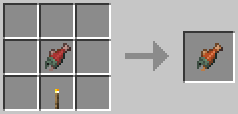
A quick way to get Cooked Salmon without a Furnace.
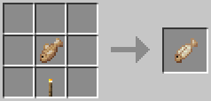
A quick way to get Cooked Cod without a Furnace.
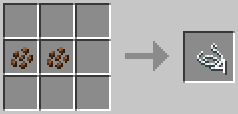
Stripping two Coconuts will produce a few pieces of string. This requires the official Coconut item, not Cocoa Beans.
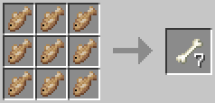
Adding 9 Cod or Salmon to a Crafting Table will give you 7 Bones.
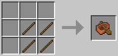
A simple recipe for a cheap Boat.
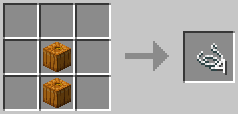
Gutting two Pumpkins will produce a few pieces of string.
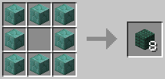
You can use a ring of one Prismarine block to make another.
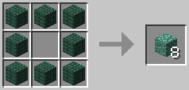
You can use a ring of one Prismarine block to make another.
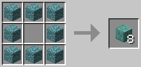
You can use a ring of one Prismarine block to make another.
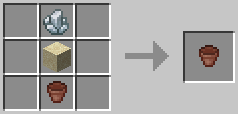
Using a Flower Pot with Sand and the custom Sea Salt item will give you an Alchemical Pot, which is necessary for some Alchemist’s work.
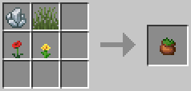
Add this into any alchemical recipie to give it an extra kick. It requires Sea Salt, not Sugar.
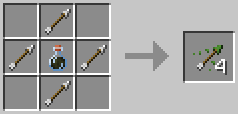
This recipe requires the poison “Blood’s Bane” to work correctly.
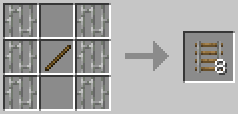
A cheaper Rail recipe.
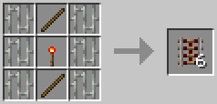
A cheaper activator rail recipe.
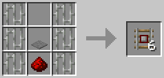
A cheaper Detector Rail recipe.
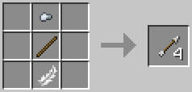
An alternative Arrow recipe.
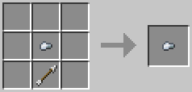
An Iron Nugget and an Arrow allow you to make the ammunition for Hand Crossbows.
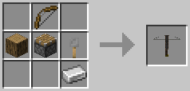
This recipe can be used with any kind of Log, not just Oak. This includes Stripped varieties.
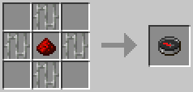
A cheaper Compass recipe.
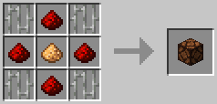
A cheaper Redstone Lamp.
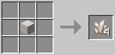
This recipe allows you to turn Quartz Blocks into individual Quartz pieces.
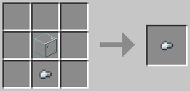
This creates an essential item for Doctors.
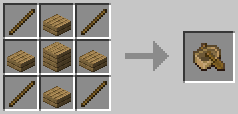
This creates an essential item for Doctors. It can be made using any type of Wooden Plank, not just Oak.
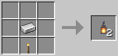
A cheaper lantern recipe.
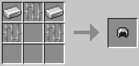
This recipe allows you to craft the helmet piece of Chain Armor, which is just as strong as Iron Armor.
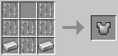
This recipe allows you to craft the chest piece of Chain Armor, which is just as strong as Iron Armor.
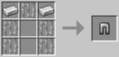
This recipe allows you to craft the leggings piece of Chain Armor, which is just as strong as Iron Armor.
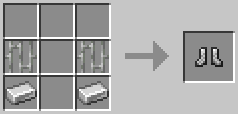
This recipe allows you to craft the shoes of Chain Armor, which is just as strong as Iron Armor.
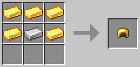
This recipe allows you to craft the helmet piece of a custom Golden Armor set that is just as strong as Iron Armor.
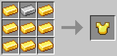
This recipe allows you to craft the chest piece of a custom Golden Armor set that is just as strong as Iron Armor.
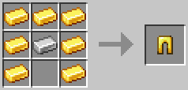
This recipe allows you to craft the leggings piece of a custom Golden Armor set that is just as strong as Iron Armor.
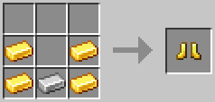
This recipe allows you to craft the shoe piece of a custom Golden Armor set that is just as strong as Iron Armor.
An Iron Nugget and an Arrow allow you to make the ammunition for Crossbows and Hand Crossbows.
A cheaper Arrow recipe.
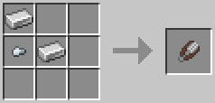
Each piece of this recipe must be placed in the order shown to work properly. Scissors are required for multiple skills.
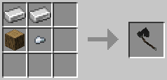
Any log, two iron ingots, and one iron nugget makes a Throwing Axe. These single use weapons can be used to slow and incapacitate opponents.
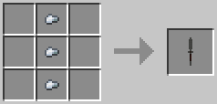
Three iron nuggets make a Throwing Dagger. These single use weapons can be quickly thrown to hit a ranged foe.
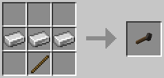
Three iron ingots and a stick makes a Throwing Hammer. These single use weapons can be used to disorient and daze at range.
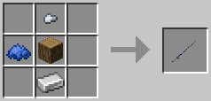
An iron ingot, any log, and an iron nugget alongside blue dye gets you a blue lance. It can be swung while on a mount to remove others from theirs. It takes some skill to hit with it!
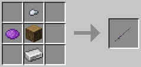
An iron ingot, any log, and an iron nugget alongside purple dye gets you a purple lance. It can be swung while on a mount to remove others from theirs. It takes some skill to hit with it!
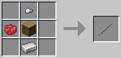
An iron ingot, any log, and an iron nugget alongside red dye gets you a red lance. It can be swung while on a mount to remove others from theirs. It takes some skill to hit with it!
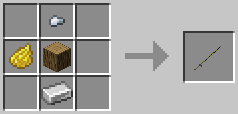
An iron ingot, any log, and an iron nugget alongside yellow dye gets you a yellow lance. It can be swung while on a mount to remove others from theirs. It takes some skill to hit with it!
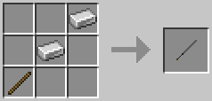
A classic and perhaps more practical blade.
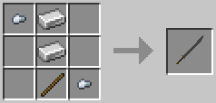
A wide cutting blade that can be used to cleave multiple foes at once - Swing, crouch and miss! Careful not to get rushed up close.
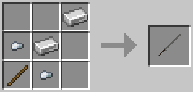
A well made blade, the goto for most fighters.
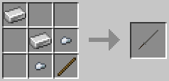
A stylistic choice over the regular longsword.
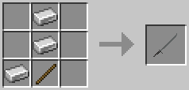
A stylistic choice over the regular longsword.
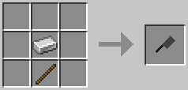
Want a cheap cutting edge that never breaks? The cleaver has you covered!
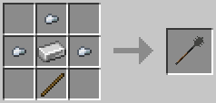
Enough heft to dent a shield, cheap enough to mass produce and such a block of iron will last longer than the man weilding it.
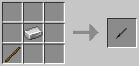
Cheap, easy to hide, and quick to swing. A lucky man would say this would draw more blood than the longsword any day.
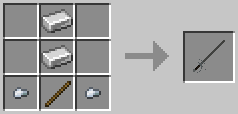
A long fine blade that's quick to swing but the smarter weilder will use it's length to thrust from afar - Right click!
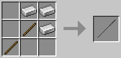
Not much to look at but it's thrust is deadly. Right click and keep your foes at bay.
A pick made entirely for war. It'll pierce most armours aswell as breaking through shields.
A traditional Hjen weapon with both a cutting edge and the ability to bludgeon or punt foes away.
The heaviest of weapons and slowest because of it. It bring devastating hits that will dent armour and break shields.
A lengthy, two handed shaft with a cutting blade that can be used to cleave multiple foes at once at range - Swing, crouch and miss! Careful not to get rushed up close.
A lengthy, two handed shaft with a swing that has the ability to break shields or cut into armour and even the ability to cleave - Swing, crouch and miss! Careful not to get rushed up close.
A heavy two handed weapon with a swifter swing than most but still the bite to pierce armour and break shields.
A two handed polearm with the ability to cleave - Swing, crouch and miss! Thrust on a right click and even be somewhat effective up close. A practical weapon in most situations.
Utterly useless at close range but it has the longest range, and quickest thrust. - Swing, crouch and miss! Careful not to get rushed up close. A solid hit with a pike can dismount a mounted foe.
A straight line of Gold Ingots allows you to make this plain piece of jewelry. The recipe requires each piece to be placed in the order shown to work properly.
A circle of Golden Nuggets allows you to make this plain piece of jewelry.
Five Gold Ingots placed in the order shown above allows you to make this piece of plain jewelry.
A mix of raw nickel and iron will give you a blend to put directly into a Blast Furnace to make steel.
A mix of raw tin and copper will give you a blend to smelt into bronze in a furnace.
This recipe provides an alternative way to craft Bonemeal by using 9 Rotten Flesh or 9 Poisonous Potatoes.
A cheaper recipe for Cake. Empty buckets are returned to you.
This allows you to transform a piece of Grass into a Fern for various uses.
This allows you to make a piece of Grass for various uses.
This allows you to acquire Grass Blocks without the use of Silk Touch.
This allows you to acquire Mycelium Blocks without the use of Silk Touch. Both Red and Brown Mushrooms work.
This allows you to acquire Podzol Blocks without the use of Silk Touch. All types of Leaf Blocks work.
A quick way to get most Cooked Meats and Baked Potatoes without a Furnace.
A quick way to get most Cooked Meats and Baked Potatoes without a Furnace.
A quick way to get most Cooked Meats and Baked Potatoes without a Furnace.
A quick way to get most Cooked Meats and Baked Potatoes without a Furnace.
A quick way to get most Cooked Meats and Baked Potatoes without a Furnace.
A quick way to get most Cooked Meats and Baked Potatoes without a Furnace.
Alchemical Reagent, Charcoal, Strange Pellet, Poppy, Barrel, Dandelion, Allium, Gelsemium, and Cornflower will make a Fertiliser Box. This can be used to fertilise a wide area of crops to speed their growth.
Four logs, ambrosia, deathcap, Hay bale, mandrake root, lucky rabbit's foot will make a Scarecrow body and a head! The body acts as a weed killer for plant growth, stopping them from dying.
Four Sticks and a piece of Wool gives you four Bandages, a necessary item for the Field Medic Skill.
Each piece of this recipe must be placed in the order shown to work properly.
This recipe requires the Sea Salt item, not Sugar.
Each piece of this recipe must be placed in the order shown to work properly.
A brace to hold up to 5 daggers for quick consecutive use. Will need loading with daggers!
This allows you to craft Saddles.
Left click to swing overhead for a second then lash your target and pull them. Right click to quickly lash at your target and drive them back with a chance to force them to drop their weapon.
This recipe allows you to craft the helmet piece of a custom Leather Armor set that is just as strong as Iron Armor.
This recipe allows you to craft the chest piece of a custom Leather Armor set that is just as strong as Iron Armor.
This recipe allows you to craft the legging piece of a custom Leather Armor set that is just as strong as Iron Armor.
This recipe allows you to craft the shoe piece of a custom Leather Armor set that is just as strong as Iron Armor.
A ring of dyed Wool around a Bucket of Water will give you 8 pieces of regular white Wool.
A Dyed Banner added with White Dye will turn it into a blank, White Banner.
A cheaper recipe for Dyed Banners.
This recipe lets you make gold armor for your steed.
This recipe lets you make iron armor for your steed.
A simple recipe that gives you multiple nametags.
A cheaper recipe to make Books. These books will come with lore that can be removed by placing them on the crafting table again.
A cheaper bookcase recipe.
An alternative recipe for ink.
This recipe creates an item that lets you pick up another player. Hold the rope and right click whilst looking at the player you wish to pick up, if they're crouching and looking back at you then you'll mount them! It's got quite the range so you can even help people climb steep cliffs!
A good strong staff! Great for vaulting over things, use right click.
A Walrus tusk with two leather and a string can be made into a hunting horn. You can right click the hunting horn to sound an alarm across a huge radius. Add a stick into one of the empty slots to change the note the horn plays. There are 6 types of horn in total!
Two recipes for torches for when you’re out of either wood or coal.
Two recipes for torches for when you’re out of either wood or coal.
You can use a ring of one Stone block to make another.
You can use a ring of one Stone block to make another.
You can use a ring of one Stone block to make another.
You can use a ring of one Stone block to make another.
A ring of Cobblestone around a Fermented Spider Eye makes 8 blocks of Netherrack.
A cheaper recipe for stairs. This recipe can make any type of Stair, not just Oak Wood.
A single piece of Packed Ice makes 9 pieces of Ice.
A single piece of Blue Ice makes 9 pieces of Packed Ice.
A ring of Stained Terracotta (all of the same color) with a Water Bucket in the center will give you back 8 pieces of Terracotta.
A ring of Concrete (all of the same color) with a Water Bucket in the center will give you back 8 blocks of White Concrete.
A quick bit of woodwork gives you something comfy to sit on by a fire!